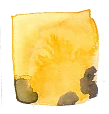

![Hartwick]()
THE CLOTH

I · HANDLOOM WEAVING FILM
Textile history dates back to the beginning of human civilization. Hartwick Atelier specializes in hand spun and handwoven fabrics that breathe with a supple rhythm no machine can replicate.